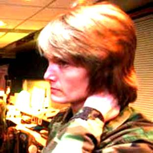

Was Flight 11 a "real world exercise" ?
Monday, March 07, 2011

Source: Newhouse NewsIn an old Democratic Underground posting the esteemed colleague Shoestring expressed doubts about the customary interpretation of the term "real world" which pops up on the NEADS tapes a couple of times. Here's his quote in its entirety:
The quote of Major James Fox saying, "I've never seen so much real-world stuff happen during an exercise" is really suspicious. I wonder if the staff at NEADS understood "real-world" to mean a live-fly field training exercise, as opposed to a purely simulated command post exercise?
So when Sgt. Jeremy Powell asked Boston flight control center "Is this real-world or exercise?" he could have been asking if the exercise was live-fly or not. And when Boston replied "this is not an exercise, not a test," he took it to mean that it was indeed a live-fly exercise, involving a plane under the control of the military pretending to be hijacked.
This would certainly explain the bizarre conversation between the NEADS "ID techs —Stacia Rountree, Shelley Watson, and Maureen Dooley—when they heard of the reported hijacking:
8:37:56
WATSON: What?
DOOLEY: Whoa!
WATSON: What was that?
ROUNTREE: Is that real-world?
DOOLEY: Real-world hijack.
WATSON: Cool!
I find it hard to believe Shelley Watson would have responded, "Cool!" if she thought "Real-world hijack" did really mean a genuine hijacking. Might she instead have believed it to have meant a "live-fly," with a real plane pretending to be hijacked, for which they could launch fighers in response?
Shoestring surmises that the term "real world" indicates a "live-fly exercise" with real airborne planes as opposed to a "command post exercise" which is only played on the desks and screens of the participating military units. I agree with him that this interpretation is far more plausible than the official version (that "real world" meant an actual, genuine hijacking).A statement of Lt. Col. Dawne Deskins of NEADS shows that Shoestring is right with his conjecture:
Deskins noted that NEADS had a hijack checklist and a variety of exercises depending on higher authority involvement and direction prior to 9/11. Some of those exercises involved NORAD coordination. She does not recall ever personally designing an exercise in which a decision would be made to shoot down the hij acked aircraft. A typical design would include course deviation in which the hijacker forces the pilot to fly to a designated landing point. They would not do these hijacks exercises real world. They had a cell that would play the FAA in the exercise. Deskins noted that there really were not the assets to do a large scale real world exercise to practice hijack response. The scenarios for the exercises are created by exercise designers in the exercise shop. Sgt. Mark Stanford and Sgt. Mike Quigley, both retired, designed the exercises when she was the head of the shop. NEADS' hijack shop would not design exercises for other sectors.
Exercises that are designed on the NORAD level are created at planning conferences. NORAD planning exercises are mostly held at Peterson, or at CONR at Tindle. There is intelligence representation at the conferences, but the sector shops are more concerned with the individual exercise of the sector floor and Battle Cab. She does not personally recall the design of a hijack with multiple hijacks or terrorist take over.
http://www.scribd.com/doc/19988140/Mfr-Nara-t8-neads-Deskins-Dawne-103003-00778
For the first time, the term "real-world exercise" emerges here in the context of the 9/11 wargames, and according to Deskins, it means a voluminous large-scale exercise with the need to involve the FAA. In smaller (not "real-world" exercises) the FAA was not needed because NEADS had its own cell playing their role. A corollary of Deskins' statement is that real-world exercises were not designed by NEADS itself, but one level above, at NORAD planning conferences.The reader can easily verify Shoestring's interpretation by searching for "real world exercise", maybe narrowed down with "air force" or "military". The output will quickly convince him that "real world exercise" is a common concept in the military world.So whenever the term "real world" is used, it indicates that NEADS personnel are believing they are confronted with a large-scale, live-fly exercise with participation of the FAA. NEADS was prepared for these exercises, but not actual, genuine hijackings. It is not known how the air defense used to label such (very rare) genuine hijackings, but it was certainly not "real world" lest to confound it with the ongoing real world exercises.Flight 11 was apparently viewed as a real-world exercise.
{kind=link}